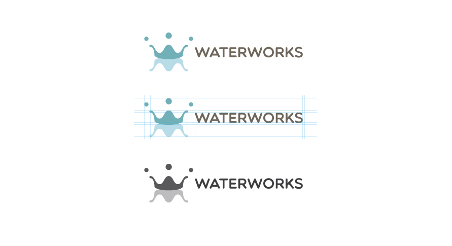

Waterworks logo design is based on a water droplet and its reflection. Both droplets and reflection of water represent 'W' shape of Water and Works.
The poster is designed to represent water cycle with four different water state, Rain, Snow, Water and Vapor, with the background of a point where Pittsburgh rivers meet.
Font faces: Helvetica Neue LT Std, Futura Std
Color scheme: #F69F7C #E9E7E0 #53C4CB
Branding for Waterworks | September 2014
The design works were done in Adobe Photoshop and Illustrator.